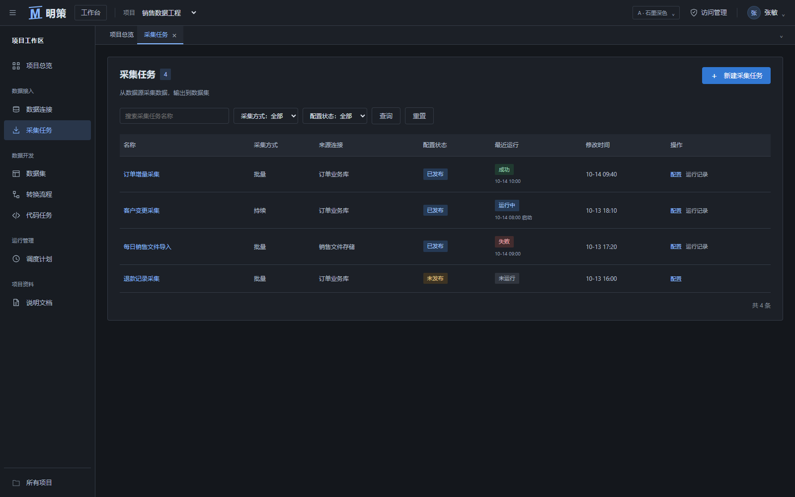
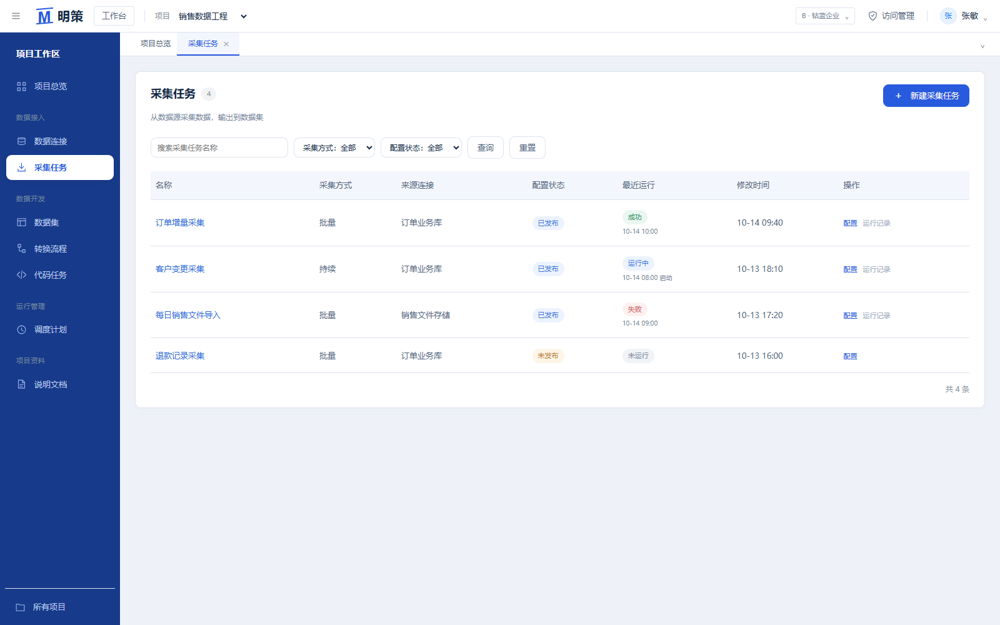
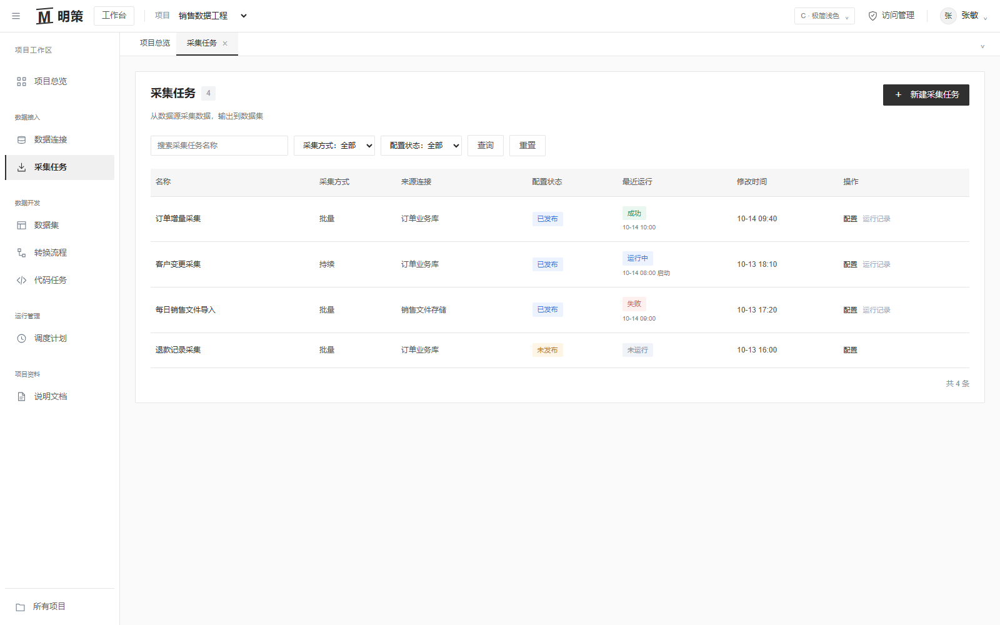

A · 石墨深色
分析工作站
页面结构、导航、表单及业务规则保持一致，只比较配色、字体、密度与控件样式。



在专业感、辨识度和日常阅读之间比较均衡。
深蓝导航让项目内的操作区域更清楚，白色表格保持阅读效率，按钮和状态的区分也更直接。A 更适合偏技术分析的产品定位，C 最克制；作为多人协作的项目后台，我会优先继续打磨 B。
右上角可切换风格；三个版本共用已认可的交互，没有增加功能或改变业务规则。当前认可版保留在本地 frontend-ux-console 分支，新风格在 frontend-design-variants 分支。未推送。